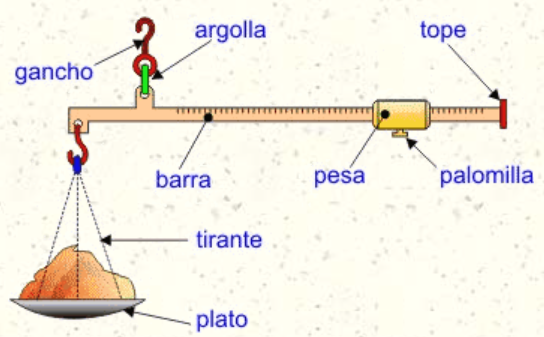
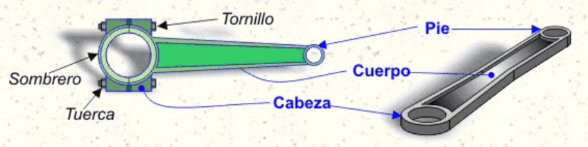

OPERADORES ELECTRÓNICOS
Los operadores electrónicos son dispositivos simples o compuestos que transmiten, controlan, recepcionan y/o transforman corrientes eléctricas de tipo continuo. Algunos ejemplos de operadores electrónicos son las baterías, los chips y los condensadores. Los operadores son elementos básicos con los que se construyen circuitos en electrónica y desempeñan las funciones elementales de la electrónica y la eléctrica.
Cuando empleamos operadores mecánicos, su unión (o interconexión) da lugar a un mecanismo, que a su vez puede ser considerado como otro operador si se une con otros mecanismos para formar una máquina. Eso mismo sucede con el resto de operadores. Veamos dos ejemplos cotidianos:
Para la construcción de una balanza romana tenemos que recurrir a la interconexión de varios operadores mecánicos y estructurales: barra, argolla, plato, tirantes, gancho... que en conjunto dan lugar a una palanca que se emplea para medir la masa de los objetos.
Para construir un circuito eléctrico elemental necesitamos interconectar, como mínimo, los operadores siguientes: pila eléctrica, cable, interruptor y lámpara.

En este caso el cable es un operador que tiene por misión permitir el paso de la corriente eléctrica por su interior evitando las fugas hacia el exterior, pero está formado por 2 operadores más básicos: un conductor (cobre por el interior) y un aislante (PVC en el exterior). Lo mismo sucede con el interruptor, cuya función tecnológica es controlar el paso de la corriente eléctrica de forma fácil y segura, y está compuesto por otros operadores más elementales (una carcasa aislante exterior, varios tornillos y tuercas, un muelle, una palanca y un accionador basculante). Con la lámpara y la pila eléctrica sucede lo mismo.
Biela
Consiste en una barra rígida diseñada para establecer uniones articuladas en sus extremos. Permite la unión de dos operadores transformando el movimiento rotativo de uno (manivela, excéntrica , cigüeñal ...) en el lineal alternativo del otro (émbolo ...), o viceversa.
Desde el punto de vista tecnológico, una de las principales aplicaciones de la biela es convertir un movimiento giratorio continuo en uno lineal alternativo, o viceversa. La amplitud del movimiento lineal alternativo depende de la excentricidad del operador al que esté unido. Este operador suele estar asociado siempre a una manivela (o también a una excéntrica o a un cigüeñal). Se emplea en multitud de máquinas que precisan de la conversión entre movimiento giratorio continuo y lineal alternativo. Son ejemplos claros: trenes con máquina de vapor, motores de combustión interna, máquinas movidas con el pie.
ELECTRÓNICA BÁSICA Y DISEÑO DE CIRCUITOS
Gif sobre el tema y su explicación.
ESTRUCTURAS ALGORÍTMICAS SECUENCIALES Y REPETITIVAS
En este podcast hablaremos sobre esgruscturas algorítmicas, sus tipos y las diferencias entre ellos.
Y con este video complementamos algunas cosas del podcast.